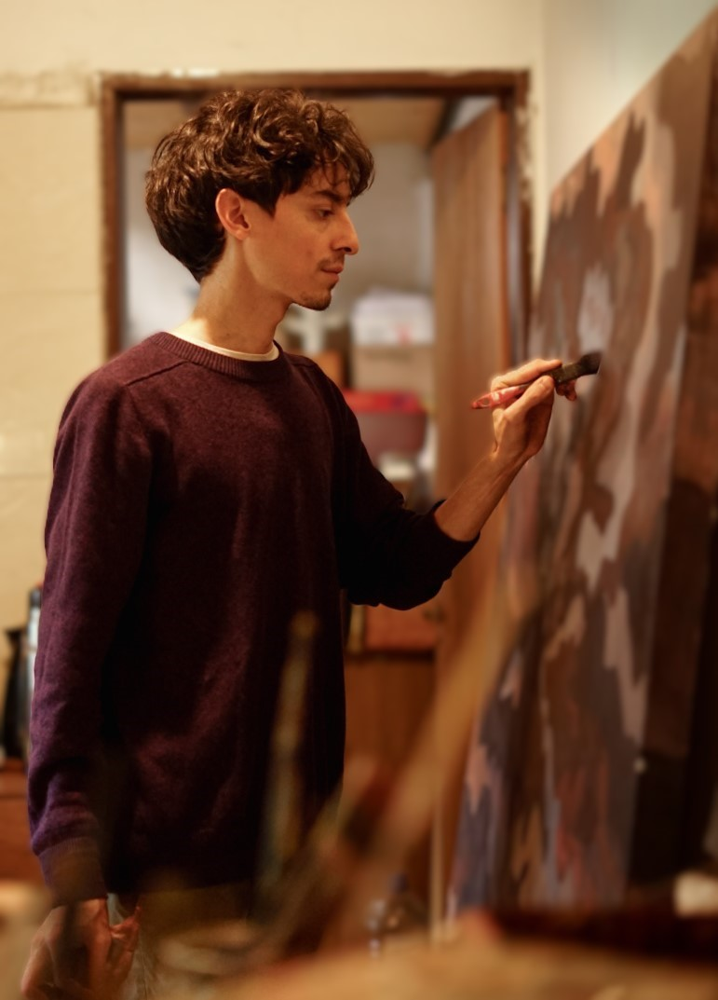

Archivo y obras disponibles
Un recorrido por mi trabajo. Podés hacer clic en cada imagen para verla en detalle, conocer sus medidas o consultarme por ella.
Página 1 de 1
Un recorrido por mi trabajo. Podés hacer clic en cada imagen para verla en detalle, conocer sus medidas o consultarme por ella.

Soy Francisco Fernández, artista visual radicado en la Patagonia. Mi trabajo nace de la observación constante: busco entender y traducir la relación entre los paisajes que habitamos, la estructura urbana y nuestra propia naturaleza humana.
A través de la pintura, el dibujo y el grabado, intento crear pausas visuales. Espacios donde el espectador pueda detenerse, encontrar sus propios significados y, tal vez, mirar lo cotidiano con una perspectiva distinta.
Cada serie es un proceso sincero de búsqueda y experimentación material desde mi taller.